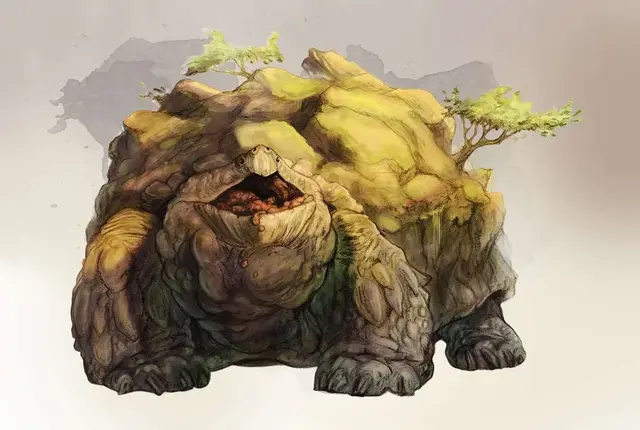

Заратан
Zaratan
Громадный Элементаль, нейтральный

Класс Доспеха 21 (природный доспех)
Хиты 307 (15к20 + 150)
Скорость 40 футов, плавая 40 футов
| мод | спас | ||
|---|---|---|---|
| СИЛ | 30 | +10 | +10 |
| ЛОВ | 10 | +0 | +0 |
| ТЕЛ | 30 | +10 | +10 |
| мод | спас | ||
|---|---|---|---|
| ИНТ | 2 | −4 | −4 |
| МДР | 21 | +5 | +12 |
| ХАР | 18 | +4 | +11 |
Уязвимость к урону звук
Сопротивление урону огонь, холод, электричество; дробящий, колющий, рубящий от немагических атак
Иммунитет к урону яд
Иммунитет к состояниям окаменение, отравление, паралич, ошеломление, истощение
Чувства тёмное зрение 60 футов, пассивное Восприятие 15, чувство вибрации 60 футов
Опасность 22 (41000 опыта)
Бонус мастерства +7
Среда обитания Горы, Лес, Луг, Подземье, Пустыня, Холмы
Особенности
Сотрясающее движение. Бонусным действием после передвижение на как минимум 10 футов по земле Заратан может послать ударную волну по земле на 120 футов вокруг себя. Зона становится труднопроходимой местностью на 1 минуту. Каждое существо, находящееся на земле должно пройти спасбросок Телосложения Сл. 25 или потерять концентрацию.
Ударная волна наносит 100 урона звуком всем строениями, находящиеся в контакте с землёй и в зоне поражения. Если существо находится рядом с обрушивающимся сооружением,оно может быть погребено под обломками; существо, находящееся от здания на расстоянии, равном менее половины его высоты должно пройти спасбросок Ловкости Сл 25. При провале цель получает 17 (5к6) дробящего урона, сбито с ног, и завалена обломками. Заваленное обломками существо опутано, и ему требуется преуспеть в проверке Силы (Атлетика) Сл. 20, совершаемой действием, чтобы выбраться. Другое существо в пределах 5 футов от погребённого существа может действием расчистить обломки, давая погребённому существу преимущество. Если три существа тратят действия на расчистку завала, проверка автоматический преуспевает. При успехе существо получает половину урона, не падает ничком и не заваливается обломками.
Легендарное сопротивление (3/день). Если Заратан проваливает спасбросок, он может вместо этого сделать спасбросок успешным.
Магическое оружие. Атаки оружием Заратана являются магическими.
Осадное чудовище. Элементаль причиняет двойной урон предметам и строениям. (включая Сотрясающее движение).
Действия
Мультиатака. Заратан совершает две атаки: одну укусом и одну топотом.
Укус. Рукопашная атака оружием: +17 к попаданию, досягаемость 20 футов, одна цель. Попадание: 28 (4к8 + 10) колющего урона.
Топот. Рукопашная атака оружием: +17 к попаданию, досягаемость 20 футов, одна цель. Попадание: 26 (3к10 + 10) дробящего урона.
Плевок камнем. Дальнобойная атака оружием: +17 к попаданию, дистанция 120 футов/240 футов, одна цель. Попадание: 31 (6к8 + 10) дробящего урона.
Брызги земли (перезарядка 5-6). Заратан выплёвывает каменные обломки в область куба с гранью 90 футов. Каждое существо в области должно преуспеть в спасброске Ловкости Сл. 25. Существа получают 33 (6к10) дробящего урона при провале,или половину этого урона при успехе. Существо провалившее бросок на 5 или больше падает ничком.
Легендарные действия
Заратан может совершить 3 легендарных действия, выбирая из представленных ниже вариантов. За один раз можно использовать только одно легендарное действие, и только в конце хода другого существа. Заратан восстанавливает использованные легендарные действия в начале своего хода.
Топот. Заратан делает одну атаку топотом.
Движение. Заратан движется на свою скорость.
Плевок (стоит 2 действия). Заратан использует Плевок камнем.
Скрыться (стоит 2 действия). Заратан скрывается в своём панцире. Пока он не использует "Появление", он получает сопротивление всему урону и становится опутанным.
В следующий раз, когда он будет использовать легендарное действие, этим действием должно быть "Исцеление" или "появление".
Исцеление (стоит 2 действия). Это действие можно делать только если Заратан скрылся в панцире. Он восстанавливает 52 (5к20) хитов. В следующий раз, когда он будет использовать легендарное действие, этим действием должно быть "Появление".
Появление (стоит 2 действия). Заратан вылезает из своего панциря и использует плевок камнем. Это действие можно сделать только если он скрывался в своём панцире.
Описание
Когда Заратан призывается из Элементального Плана Земли, из-под земли возвышается силуэт, подобный громадной, броненосной рептилии, на чьём панцире образуется островок из того места, откуда оно появилось. Когда Заратан перемещается по суше, от каждого его шага по земле исходят ударные волны, способные разрушать сооружения. Заратан, будучи глупым существом, покачивается вперёд, выражая свою ярость через свои рычания и периодически изрыгая камни или прочие объедки из своей огромной пасти. Если он будет серьёзно ранен, Заратан медленно втягивает свои конечности и голову, и получает укрытие в своём непроницаемом панцире, выжидая подходящего момента, чтобы вылезти из укрытия, пока не залечатся его раны.